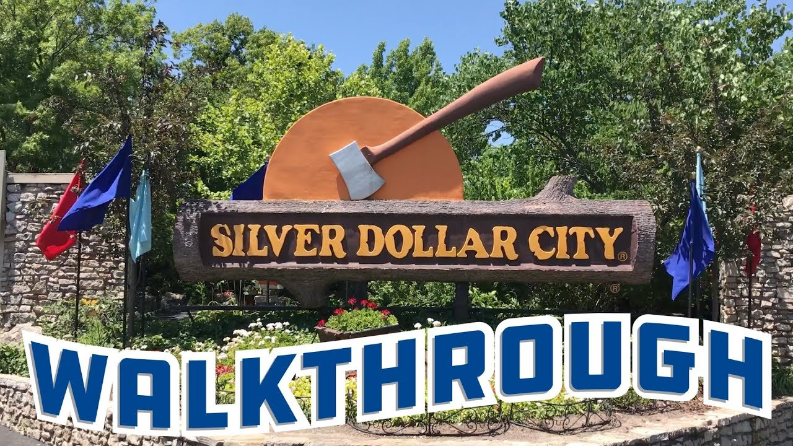
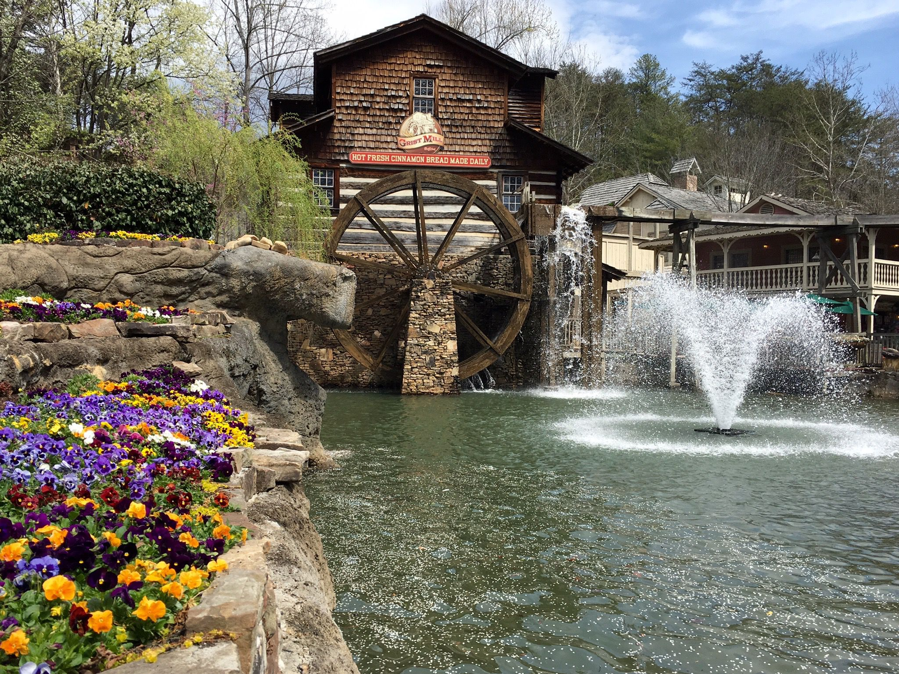
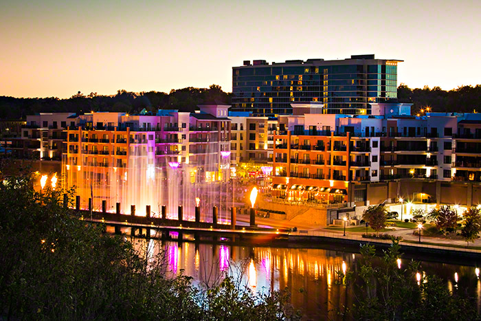

Silver Dollar City

I become a kid if I step into Silver Dollar City. Step back in time to the 1880s at Silver Dollar City, a thrilling theme park with roller coasters, live shows, crafts, and delicious food. Experience the Ozarks' rich history and heritage while enjoying family-friendly entertainment.
Dollywood

Immerse yourself in the captivating world of Dollywood, a theme park celebrating the legacy of Dolly Parton. Ride exciting coasters, explore the vibrant shows, and stroll through themed areas showcasing Appalachian crafts and traditions. Enjoy a delightful blend of thrills, music, and family fun.
Branson Landing

My family loves Branson Landing. Branson Landing offers a unique blend of shopping, dining, and entertainment. Explore a variety of stores, from national brands to local boutiques. Delight your taste buds at diverse restaurants, and enjoy captivating live music or catch a movie at the cinema complex. It's a perfect destination for a day of shopping, dining, and entertainment.
Branson offers a multitude of attractions beyond these highlights. From breathtaking shows to captivating museums and exciting outdoor adventures, there's something for everyone. Explore the natural beauty of the Ozarks, experience thrilling live entertainment, or indulge in a relaxing spa day. Branson promises an unforgettable getaway with memories to cherish.